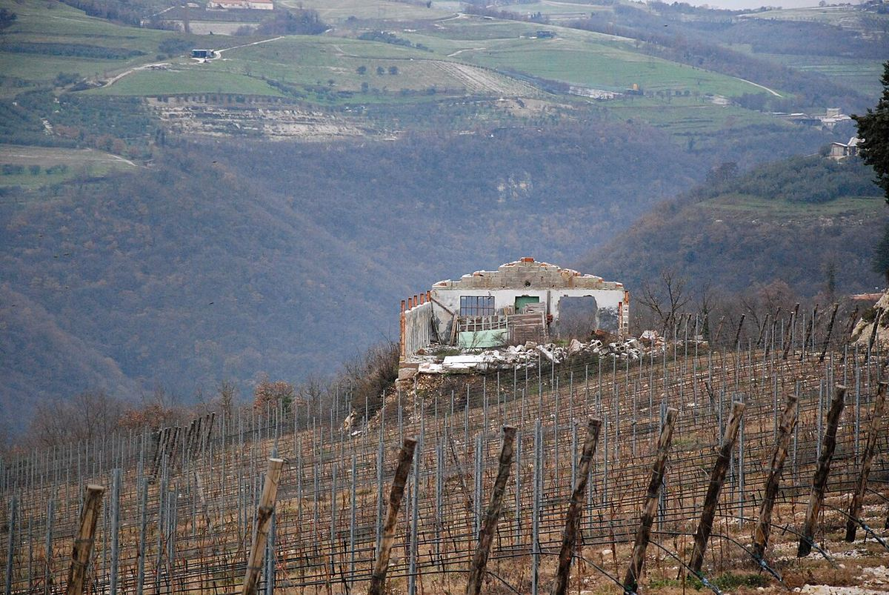

TINTO
La Valpolicella, en las colinas al norte de Verona, produce tintos a base de Corvina que van del Valpolicella joven al Ripasso y a los vinos de uvas pasificadas: el seco Amarone y el dulce Recioto, ambos DOCG.

Las colinas al norte de Verona tienen una larga tradición vitícola, y la elaboración de vinos dulces con uvas secadas tras la vendimia está documentada desde la Antigüedad tardía. De esa tradición procede el Recioto, el vino dulce histórico de la zona. El Amarone, su versión seca, se desarrolló y comercializó a partir de mediados del siglo XX; su nombre alude al carácter amaro, es decir, amargo o no dulce, en contraste con el Recioto. La DOC Valpolicella se reconoció en 1968, y en 2010 el Amarone della Valpolicella y el Recioto della Valpolicella obtuvieron la DOCG, mientras que el Valpolicella Ripasso pasó a tener una DOC propia.
La zona se extiende por los valles y colinas que descienden de los montes Lessini hacia la llanura del Adigio. La Valpolicella Classica, núcleo histórico, comprende los municipios de Fumane, Marano di Valpolicella, Negrar di Valpolicella, San Pietro in Cariano y Sant'Ambrogio di Valpolicella; a ella se suman el valle de Valpantena y una zona oriental más amplia. El clima es continental moderado: los Lessini protegen de los vientos fríos del norte y el cercano lago de Garda suaviza las temperaturas en el sector occidental.
Los suelos combinan calizas y margas en las colinas, depósitos de origen volcánico, especialmente basaltos, en algunos valles orientales, y suelos aluviales y morrénicos en las zonas bajas. Muchos viñedos de ladera se cultivan en terrazas sostenidas por muros de piedra seca, llamados marogne.
La Corvina es la variedad principal y aporta aromas de cereza y una acidez fresca. La acompañan la Corvinone, de racimo y grano más grandes, la Rondinella y, en menor medida, la Molinara y otras variedades locales. Tradicionalmente las viñas se conducen en pérgola veronesa, aunque también se ha extendido la espaldera.
El Valpolicella es un tinto de cuerpo ligero a medio, con fruta roja y buena acidez; la mención Superiore indica mayor graduación y crianza. Para el Amarone y el Recioto, las mejores uvas se dejan secar durante varios meses en locales ventilados llamados fruttai, lo que concentra azúcares y aromas; el Amarone fermenta hasta quedar seco y da un tinto potente, de graduación alta, con notas de fruta pasificada, cereza en licor y especias, mientras que en el Recioto la fermentación se detiene y el vino conserva su dulzor. El Ripasso se obtiene volviendo a fermentar el Valpolicella sobre los orujos del Amarone o del Recioto, lo que le da más cuerpo y complejidad.